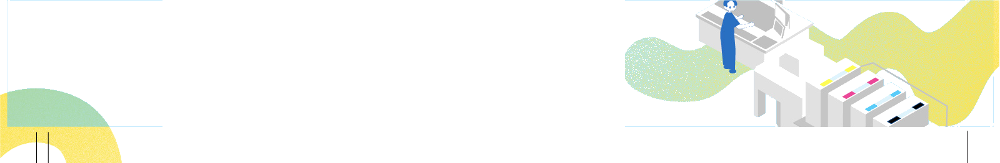

私たちの会社
仕事・人を知る
募集要項
お問い合わせ
FAQ
須田製版公式サイト
採用サイト
私たちの会社
仕事を知る
人を知る
募集要項
FAQ
お問合せ
須田製版公式サイト

仕事・人を知る
TOP
＞
仕事・人を知る
Work process
← 横にスクロールできます →
01
営業
02
制作
03
印刷
04
加工・物流
総務
できたもの
Interview
営業
N.M
営業部
制作
印刷
H.S
印刷部
総務
若手社員と
コーヒーブレイク
戻る